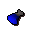
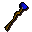
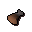
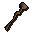
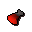
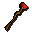
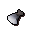

Battlestaff
| Config name | battlestaff |
| Item id | 1391 |
| Value | 7000 gp |
| Weight | 5lb |
| Members | Yes |
| Tradeable | Yes |
| Stackable | No |
| Equip slot | righthand |
| Options | Wield |
| Category | weapon_staff |
| Defined in | scripts/skill_combat/configs/magic/battlestaves.obj |
| Equipment stats | Stab att 7, Slash att -1, Crush att 25, Magic att 10, Stab def 2, Slash def 3, Crush def 1, Magic def 10, Strength 32 |
Battlestaff
It's a slightly magical stick.
Used to make
| Skill | Level | XP | Ingredients | Tool | How | Where | Makes |
|---|---|---|---|---|---|---|---|
| Crafting | 54 | 100.0 |  Water orb, | use on item |  Water battlestaffmembers | ||
| Crafting | 58 | 112.5 |  Earth orb, | use on item |  Earth battlestaffmembers | ||
| Crafting | 62 | 125.0 |  Fire orb, | use on item |  Fire battlestaffmembers | ||
| Crafting | 66 | 137.5 |  Air orb, | use on item | members |
Sold at
| Shop | Shopkeeper | Stock |
|---|---|---|
| Magic Guild Store | 5 |
Referenced in scripts
scripts/areas/area_seers/scripts/thormac.rs2scripts/drop tables/scripts/kalphite_queen.rs2scripts/levelrequire/scripts/tier30.rs2scripts/levelup/scripts/levelup_unlocks_magic.rs2scripts/skill_crafting/scripts/battlestaves/battlestaves.rs2